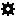

-
brennan.oldcities.org
- Free culture! A plaintext insecure mirror of IndieWeb publication https://brennan.day
-
eklausmeier.goip.de
- Elmar Klausmeier's Blog on Computers, Programming, and Mathematics
-
felix.plesoianu.ro
- Free culture! Just a ghost of social networks past, haunting the web.
-
handthing.party
- You still doing that hand thing?
-

netizen.club- collective focused on new retro web revival
-
pnppl.cc
- Free culture! Notes, essays, fiction, art, code, and whatever else I feel like posting.
-
sushantmondal.com
- Personal website of a computer architect.
Bold entries work well without CSS.